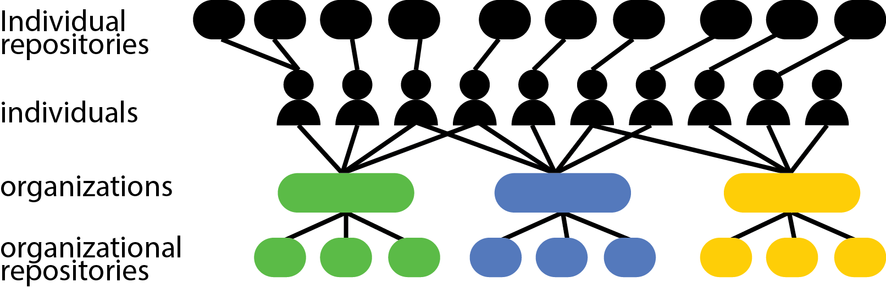
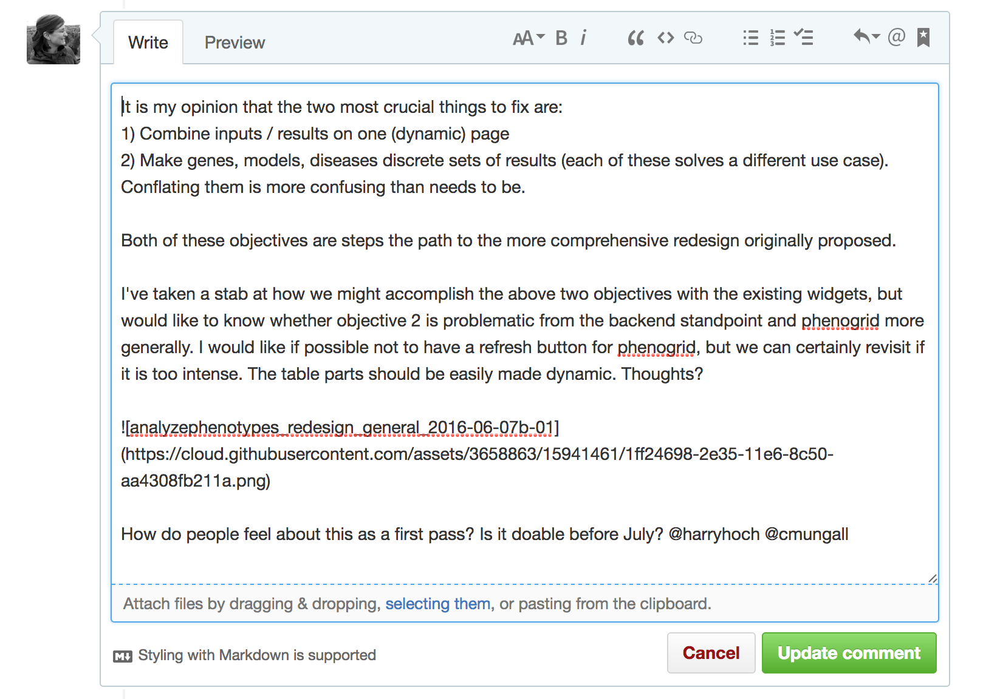

About using images in Git/GitHub¶
There are two places you'll probaby want to use images in GitHub, in issue tracker and in markdown files, html etc. The way you handle images in these contexts is quite different, but easy once you get the hang of it.
In markdown files (and html etc)¶
All images referenced in static files such as html and markdown need to be referenced using a URL; dragging and dropping is not supported and could actually cause problems. Keeping images in a single directory enables them to be referenced more readily. Sensible file names are highly recommended, preferably without spaces as these are hard to read when encoded.
An identical file, named in two different ways is shown as an example below. They render in the same way, but the source "code" looks ugly when spaces are used in file names.
Eg.
| encoding needed | no encoding needed |
|---|---|
 |
 |
In this example, the filename is enough of a 'url' because this file (https://ohsu-library.github.io/github-tutorial/howto/images/index.md) and the images are in the same directory https://ohsu-library.github.io/github-tutorial/howto/images/.
To reference/embed an image that is not in the same directory, a more careful approach is needed.
Referencing images in your repository and elsewhere¶
| Absolute path referencing | Relative path referencing |
|---|---|
 |
 |
 |
 |
Each instance of ../ means 'go up one level' in the file tree.
It is also possible to reference an image using an external URL outside your control, in another github organization, or anywhere on the web, however this method can be fragile if the URL changes or could lead to unintended changes. Therefore make your own copies and reference those unless:
- You're sure that referencing the originals will not end in broken links or surprising content.
- Copying the image is prohibited
- The images are too large to make copying worth the hassle/expense.
For example, it is not clear for how long the image below will manage to persist at this EPA link, or sadly, for how long the image will even be an accurate reflection of the current situation in the arctic. https://www.epa.gov/sites/production/files/styles/microsite_banner/public/2016-12/epa-banner-images/science_banner_arctic.png

In GitHub issue tracker¶
Images that are embedded into issues can be dragged and dropped in the GitHub issues interface. Once you've done so, it will look something like this with GitHub assigning an arbitrary URL (githubuserassets) for the image.


Sizing images¶
Ideally, a Markdown document is renderable in a variety of output formats and devices. In some cases, it may be desirable to create non-portable Markdown that uses HTML syntax to position images. This limits the longevity of the artifact, but may be necessary sometimes. We describe how to manage this below.
In order to size images, use the native html syntax: width = with the <img src=, as per below.
<img src="https://github.com/monarch-initiative/monarch-app/raw/master/image/Phenogrid3Compare.png" width="53">